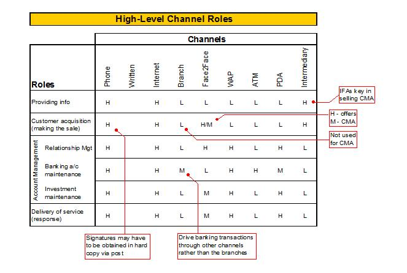
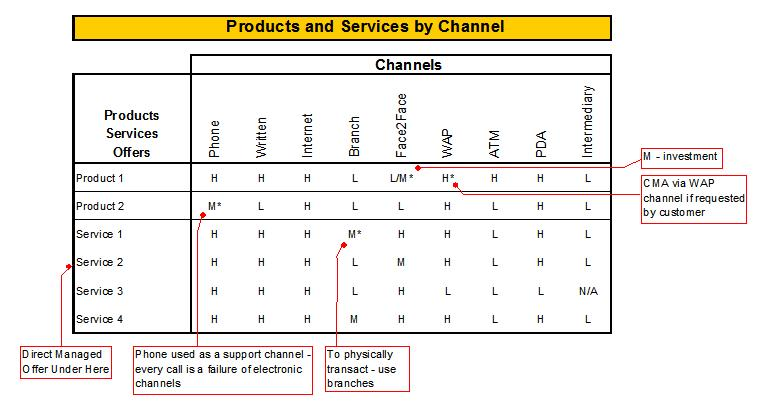
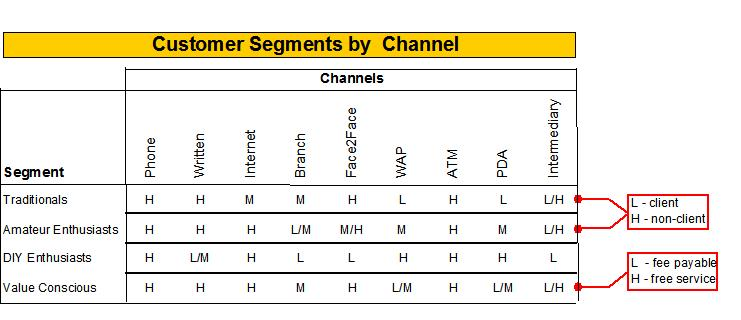

| Example: Marketing Channel Strategy |
 |
|
| Related Elements |
|---|
High-Level Channel Roles The following table describes the various channels available to deliver CMAs, a banking offering. The marketing decision-makers have identified six key roles and nine channels. Each channel has its own strengths (High to Low) for delivering this banking service relative to the various roles. This is an inside-out approach to channels. “Here we sit right now. What are our paths to market?” While successful channel strategy will ultimately begin with the buyer, this is not an impractical “first cut” to simply identify the channels. Later, managers will need to shift their thinking to buyer behavior within the possible channels.
 The table below looks at channels based on product and service offering. Some channels simply work better for certain offerings. Again, this is not the ultimate determinant of channel strategy, but it is part of the analysis because a company must be able to sell and deliver through the chosen channels.  Channels by Target Market
The following table, while closely resembling the other tables, reflects the most important elements of the channel
strategy analysis: “How do buyers behave? Where do they go to get what they want?” A company must be able to build this
table in order to develop an effective channel strategy.  |
| © Copyright IBM Corp. 1987, 2012 All Rights Reserved Property of IBM These materials are intended only for use as part of an IBM engagement |